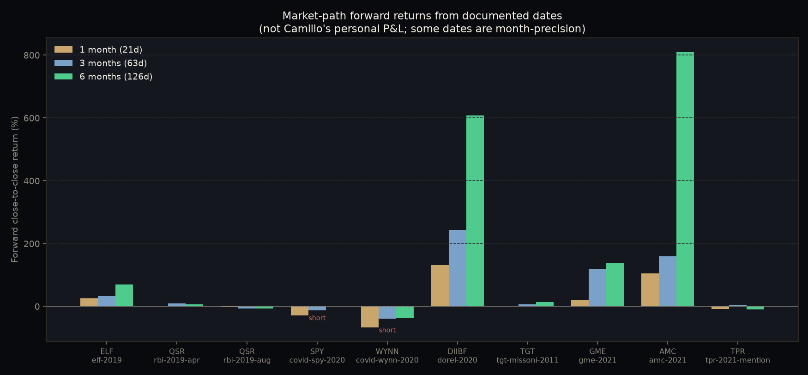
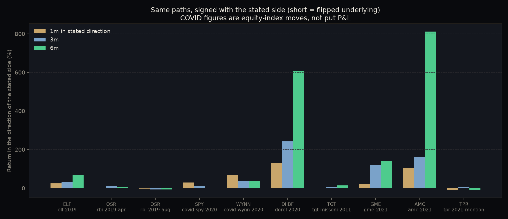
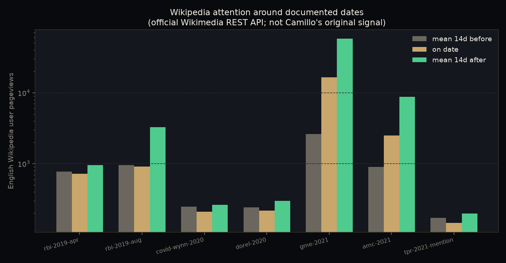
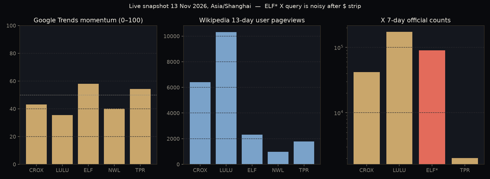

街景 · Street-view & experiments
这套框架用来支持 Camillo 的定价检验，而不是替代观察本身。流程是：利基信号 → 候选代码 → 卖方共识档案（Street Consensus Profile）→ 定价结论。只有「利基上升且尚未清楚定价」才能进入人工研究；已经定价或数据不足就停下来。
档案的七个构件：共识评级分布、目标价离散与隐含上行、盈利预测修正、评级变动新近度、新闻 / 研报语气、覆盖人数、盈利意外历史。模块在 camillo_tracker.street_view，结论只能是 already_priced / partially_priced / not_clearly_priced / insufficient_data。
This framework is built to support Camillo’s “is it priced in?” test, not to replace observation. The workflow is: niche signal → candidate ticker → Street Consensus Profile → priced-in verdict. Only “niche rising and not clearly priced” survives to human work; already priced, or insufficient data, is a stand-down.
Seven components: consensus rating distribution, price-target dispersion and implied upside, estimate revisions, rating-change recency, news/note sentiment, coverage count, earnings-surprise history. Implemented in camillo_tracker.street_view. The only allowed labels are already_priced, partially_priced, not_clearly_priced, and insufficient_data.
我们对 10 个有日期、有代码的记录，用 yfinance 复权收盘价计算 21 / 63 / 126 个交易日的前瞻收益。这是市场路径，不是 Camillo 的个人盈亏。样本小，且偏向他后来谈过的故事；若干日期只有月份精度；GME / AMC 的占位已经落在挤兑中段；TPR 用的是 BI 文章日期，不是入场日；新冠仓位是期权，标的收益不是期权盈亏；Target × Missoni 是隔夜期权。我们拒绝给历史事件贴上「高利基 / 低卖方」象限标签：免费的 Google Trends 从 2026 年 11 月回看只有约五年，到不了 2019–2020，我们不会编造。
For 10 dated, tickered events we computed 21 / 63 / 126-trading-day forward returns on yfinance auto-adjusted closes. These are market paths, not Camillo’s personal P&L. The sample is small and biased toward stories he later discussed; several dates are month-precision; the GME / AMC placeholders sit mid-squeeze; TPR uses the BI article date, not an entry; the COVID positions were puts, so equity returns are not put P&L; Target × Missoni was an overnight options trade. We refuse to assign historical high-niche / low-Street quadrants: free Google Trends from November 2026 only reaches about five years, and we will not invent the rest.



| Event | Ticker | Date | Precision | Side | 1m | 3m | 6m | Notes |
|---|---|---|---|---|---|---|---|---|
| elf-2019 | ELF | 2019-03-15 | month | long | +25.0% | +32.5% | +70.3% | Mid-month placeholder. Self-report was >50% in six weeks — a different window. 0 Yahoo upgrades before, 4 after. |
| rbi-2019-apr | QSR | 2019-04-15 | month | long | +0.5% | +9.2% | +7.1% | Documented losing thesis; early window not yet the loss. Screenshots viewed. |
| rbi-2019-aug | QSR | 2019-08-15 | month | long | −2.2% | −7.2% | −7.3% | Second purchase window. Damage continues into 2020. |
| covid-spy-2020 | SPY | 2020-02-15 | month | short | −28.7% | −11.9% | +1.4% | Underlying path. Puts, 25–30% of savings, self-reported. Index recovered by 6m. |
| covid-wynn-2020 | WYNN | 2020-02-15 | month | short | −67.5% | −38.4% | −36.9% | Underlying path, not put P&L. |
| dorel-2020 | DIIBF | 2020-04-24 | day | long | +131.1% | +242.9% | +608.7% | Best-dated. yfinance start ≈ $0.69 vs BI screenshot $1.56 — OTC discrepancy, both kept. 629% in BI is the path to $11.38 in November. |
| tgt-missoni-2011 | TGT | 2011-09-07 | day-approx | long | +2.6% | +6.7% | +14.4% | He described an overnight options double. The equity path is a different instrument. Wiki starts 2015. |
| gme-2021 | GME | 2021-01-25 | month | long | +19.4% | +120.0% | +139.5% | Self-reported buy ~$70, mid-squeeze. Prices are split-adjusted. Wiki views: 2,628 → 16,446 → 57,513 (14d before / on date / 14d after). |
| amc-2021 | AMC | 2021-01-25 | month | long | +105.7% | +160.2% | +811.5% | Self-reported $3 → $13–15. Prices are split-adjusted and should not be compared raw to those figures. |
| tpr-2021-mention | TPR | 2021-08-15 | mention | long | −8.3% | +4.5% | −9.8% | BI mention of a $3.1M position — not an entry date. |
Full JSON and method note: data/event_study.json. Unit tests: toolkit/tests/test_street_view.py (11 passed, 13 Nov 2026).
趋势检测不限于 Google Trends，TikTok 和亚马逊也不必走官方开发者渠道。我们用 Scrapling StealthyFetcher 捕获了 Creative Center 公开页的内部 JSON，并用同一会话在页面内请求公开的 /api/challenge/detail/，得到精确的 statsV2；davidteather/TikTok-Api（无需登录）作为第二种官方形态交叉验证。亚马逊公开畅销榜的官方 data-client-recs-list zg.rank 给出了真实名次，品牌只按商品标题匹配。没有使用 Max 的登录凭据，也没有绕过付费墙或 Cloudflare 挑战。不能核实的数字全部丢弃；累计播放量和单一 BSR 不会被编成动量 z 分数。
Trend detection is not limited to Google Trends, and TikTok / Amazon numbers need not come from official developer programs. Scrapling StealthyFetcher captured Creative Center’s public internal JSON, and an in-page fetch of public /api/challenge/detail/ returned exact statsV2 counts; davidteather/TikTok-Api (no login) is a second official-shaped cross-check. Public Amazon Best Sellers pages expose official data-client-recs-list zg.rank values; brands are matched on product title only. No logins with Max’s credentials, and no paywall or Cloudflare bypass. Unverifiable numbers were discarded. A lifetime view total or a single BSR is not turned into a momentum z-score.

Updated 13 Nov 2026, 09:10 Asia/Shanghai (TikTok and Amazon public-data pass). Earlier Wikipedia / Trends / X snapshot: 02:08–02:11 Asia/Shanghai. Provenance log: data/provenance.csv.
| Platform | Status | Reason | What was tried |
|---|---|---|---|
| wikipedia | worked | 5/5 daily series (corrected titles for ELF and TPR). | Official Wikimedia REST API, identified User-Agent. |
| google_trends | worked | 5/5 keywords, pytrends, 5-year US window. Momentum: CROX 43.1, LULU 35.56, ELF 57.97, NWL 40.16, TPR 54.37. | pytrends with urllib3 method_whitelist patch. |
| x | worked | Official 7-day counts: Crocs 42,056 (spike 18,438 on 10 Nov); Lululemon 172,939; Coach bag 2,029; ELF 90,164 (noisy after $ strip). twscrape skipped (needs logins). | Grok Bot MCP get_posts_counts_recent (official X API). CCT_X_BEARER adapter available. twscrape not logged in. |
| google_news | worked | 5/5 RSS feeds (84, 100, 77, 49, 56 items). | Google News RSS; Scrapling as fallback (not needed). |
| youtube | worked | 3 public ytsearch results for “Crocs shoes”: 1,886,428 / 57,254 / 2,965,598 views (yt-dlp metadata, no download). | yt-dlp ytsearch3 --dump-json --skip-download. YouTube Data API skipped (no key). |
| app_store | worked | iTunes Search returns presence, not a live top-chart rank. | Official iTunes Search API. |
| gdelt_news | partial | First pass HTTP 429 (need ≥5s). Retry after 6s for “Crocs” returned 28 TimelineVol points, max 0.0505 on 2026-10-06, last 0.0046 on 2026-11-12. “e.l.f.” rejected as too short/common. | Official GDELT DOC API TimelineVol. |
| tiktok | worked | Official public challenge/detail statsV2 at 08:49 Asia/Shanghai: #crocs 35,500,544,935 views / 1,927,145 videos; #lululemon 26,698,719,936 / 1,274,509; #elfcosmetics 11,511,831,389 / 560,071; #coachbag 6,066,578,377 / 418,193; #elmersslime 89,456,670 / 2,217. TikTokApi (no login) cross-checked the first three (rounded billions match; live statsV2 increment). Creative Center public top-3 US 7-day also worked (#veteransday 63,021 posts / 68,790,053 views, DOM-confirmed) but is capped at 3 without login — sample brands were not in that list. Lifetime totals are a stock, not a z-score. hashtagradar figures are lower and from one site under two hostnames; not used to override. | StealthyFetcher XHR + in-page /api/challenge/detail/; davidteather/TikTok-Api hashtag.info(); Fetcher UNIVERSAL_DATA was a bot-shell (blocked for stats). No logins. |
| pinterest_trends | partial | HTTP 200, 57,852 bytes, title “Pinterest Trends”. No numeric series extracted. | Scrapling Fetcher. |
| amazon_movers | worked | Best Sellers official zg.rank, title-only match, 08:50 Asia/Shanghai: Crocs Classic Clog (B0014C0LSY) #1 Women’s Shoes and #12 Clothing, Shoes & Jewelry; Crocs Lined Clog (B01A6LUCZU) #29 Women’s Shoes, and on the product page #455 in Clothing, Shoes & Jewelry / #5 in Women’s Mules & Clogs; e.l.f. Instant Lift Brow Pencil #23 and Cream Glide Lip Liner #24 in Beauty. Lululemon, Coach, and Elmer’s were not in the top 50 of the lists fetched (absence recorded, not estimated). Movers & Shakers had no recs JSON; search HTTP 503; CamelCamelCamel Cloudflare 403 (not bypassed); Keepa PNG is a price chart, not BSR. | Scrapling Fetcher of public Best Sellers and one product page. Title-only brand match (context false positives discarded). |
| blocked | Scrapling 200 on a public URL, but instaloader Hashtag.from_name returned 403 login_required. No credentials used. | Scrapling Fetcher; instaloader with no login. | |
| blocked | www 403; old.reddit 403; PullPush 526; Scrapling 403. Datacenter IP is a known issue. | Public JSON, PullPush, Scrapling. |
主键是公开接口 /api/challenge/detail/ 的 statsV2（精确字符串）。stats.viewCount 是四舍五入的十亿级数字；大标签的 stats.videoCount 会溢出为 0，所以不用。#coach、#lulu、#slime 是泛用词，只作记录，分析时优先用更具体的标签。累计播放量不是一周动量，单次快照不计算 z 分数。第三方便用 hashtagradar（与 tiktokhashtags.com 是同一站点）的数字明显偏低，方向一致，但不以它覆盖官方数字。
The primary source is statsV2 (exact strings) from the public /api/challenge/detail/ endpoint. stats.viewCount is rounded to the billions; stats.videoCount overflows to 0 on large tags, so we ignore it. #coach, #lulu, and #slime are noisy generic words — recorded, but we prefer the specific tags. Lifetime totals are not a weekly momentum figure, and a single snapshot is not a z-score. Third-party hashtagradar (the same site as tiktokhashtags.com) is directionally consistent but substantially lower, and is not used to override the official counts.
| Ticker | Hashtag | Quality | Views (statsV2) | Videos | Retrieved (UTC) | Cross-check |
|---|---|---|---|---|---|---|
| CROX | #crocs | specific | 35,500,544,935 | 1,927,145 | 2026-11-13T00:49:34Z | TikTokApi 00:53:47Z: 35,500,665,122 / 1,927,144 (live increment). Earlier XHR 00:46:53Z: 35,500,477,038 / 1,927,163. |
| CROX | #crocsshoes | specific | 747,910,931 | 53,039 | 2026-11-13T00:49:35Z | |
| CROX | #crocsclassicclog | specific | 20,573,765 | 1,287 | 2026-11-13T00:49:36Z | |
| LULU | #lululemon | specific (preferred) | 26,698,719,936 | 1,274,509 | 2026-11-13T00:49:38Z | TikTokApi: 26,698,742,524 / 1,274,510. |
| LULU | #lulu | noisy (common name) | 13,339,723,550 | 1,015,318 | 2026-11-13T00:49:39Z | Do not treat as a brand-only count. |
| ELF | #elfcosmetics | specific (preferred) | 11,511,831,389 | 560,071 | 2026-11-13T00:49:41Z | TikTokApi: 11,511,866,885 / 560,074. |
| ELF | #elfbeauty | specific | 173,633,632 | 7,486 | 2026-11-13T00:49:42Z | |
| ELF | #elfmakeup | specific | 1,410,803,929 | 78,750 | 2026-11-13T00:49:44Z | |
| TPR | #coachbag | specific (preferred) | 6,066,578,377 | 418,193 | 2026-11-13T00:49:47Z | Cleaner than #coach. |
| TPR | #coach | noisy (many meanings) | 68,635,437,552 | 5,821,037 | 2026-11-13T00:49:45Z | Do not treat as a brand-only count. |
| TPR | #coachnewyork | specific | 233,738,750 | 23,338 | 2026-11-13T00:49:48Z | |
| NWL | #elmersslime | specific (preferred) | 89,456,670 | 2,217 | 2026-11-13T00:49:49Z | |
| NWL | #elmersglue | specific | 624,740,454 | 12,310 | 2026-11-13T00:49:51Z | |
| NWL | #slime | noisy (very broad) | 222,606,744,837 | 6,360,686 | 2026-11-13T00:49:52Z | Not brand-specific. |
Creative Center public US last-7-days top 3 (not sample brands), 08:39 Asia/Shanghai, XHR + DOM: #veteransday 63,021 posts / 68,790,053 views (DOM 63K / 68.8M); #mymoonmyman 19,837 / 43,857,081 (19.8K / 43.9M); #piratetoken 59,086 / 428,310,388 (59.1K / 428.3M). Full JSON: sample_hashtag_counts.json.
| Ticker | ASIN | Title | Rank | List / category | Method | Retrieved (UTC) |
|---|---|---|---|---|---|---|
| CROX | B0014C0LSY | Crocs Unisex-Adult Classic Clog, Clogs for Women and Men | 1 | Women’s Shoes bestsellers | official zg.rank JSON | 2026-11-13T00:50:49Z |
| CROX | B0014C0LSY | same ASIN | 12 | Clothing, Shoes & Jewelry bestsellers | official zg.rank JSON | 2026-11-13T00:50:49Z |
| CROX | B01A6LUCZU | Crocs Unisex-Adult Classic Lined Clog | Casual Shoes | 29 | Women’s Shoes bestsellers | official zg.rank JSON | 2026-11-13T00:50:49Z |
| CROX | B01A6LUCZU | Crocs Lined Clog Navy/Charcoal (product page) | 455 / 5 | Clothing, Shoes & Jewelry / Women’s Mules & Clogs | product-page BSR phrases | 2026-11-13T00:52:20Z |
| ELF | B07PBQZ3KF | e.l.f. Instant Lift Brow Pencil, Dual-Sided, Blonde | 23 | Beauty & Personal Care bestsellers | official zg.rank JSON | 2026-11-13T00:50:49Z |
| ELF | B0CMYR1CNK | e.l.f. Cream Glide Lip Liner | 24 | Beauty & Personal Care bestsellers | official zg.rank JSON | 2026-11-13T00:50:49Z |
| LULU / TPR / NWL | — | no title-only hit | — | top 50 of fetched lists | absence recorded, not estimated | 2026-11-13T00:50:49Z |
Women’s Shoes #29 vs Women’s Mules & Clogs #5 is consistent (the subcategory is narrower). Full JSON: sample_bsr.json.
把新的 TikTok / 亚马逊适配器并入样本后，五个代码都没有达到「两个平台相对自身基线上升」的交叉确认门槛。维基百科最近一日浏览量全部低于自身历史（负 z）；Google Trends 动量只有 ELF（57.97）超过 +0.5 的确认线，因此 ELF 的确认数是 1，仍不够。TikTok 累计播放量和亚马逊名次是真实数字，但单次快照没有基线，列入 platforms_present_no_z，不编造 z，也不把缺失项填上。
After folding the new TikTok and Amazon adapters into the sample, none of the five tickers meet the two-platform rising-z confirmation threshold. Wikipedia last-day views are all below their own history (negative z). Only ELF’s Google Trends momentum (57.97) clears the +0.5 confirmation line, so ELF has n_confirming = 1, still short. TikTok lifetime totals and Amazon ranks are real numbers, but a single snapshot has no baseline: they sit in platforms_present_no_z. No z is invented, and nothing is imputed.
Weighted z (Trends + Wikipedia only): CROX −1.136, LULU −1.067, ELF +0.189, TPR −0.240, NWL −0.860. Full file: corroboration_sample.json. Adapters: camillo_tracker.tiktok, camillo_tracker.amazon, camillo_tracker.signals.
X sample file: x_counts_sample.json. YouTube metadata: youtube_ytsearch_crocs.json. Env vars for users: CCT_X_BEARER, CCT_USE_FINBERT=1, YOUTUBE_API_KEY (optional official path), CCT_LIVE_TIKTOK=1 / CCT_LIVE_AMAZON=1 to refetch instead of using the verified cache. Cross-platform corroboration requires two rising z-scores; missing platforms are listed, never imputed.